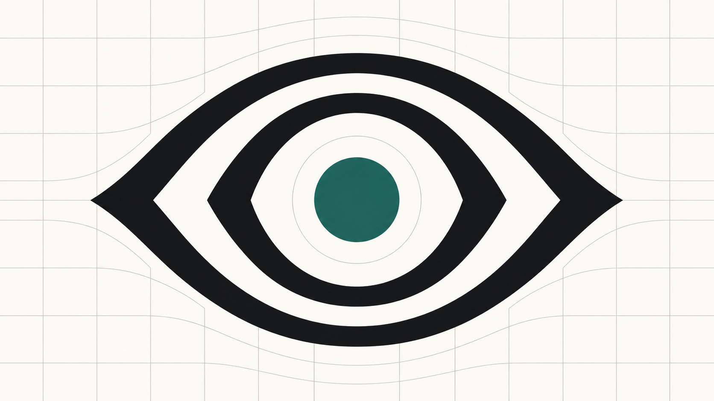

2.2 billion people live with a vision impairment. Open IPAX gives designers a color system that makes accessibility part of how they already work — not an audit they run after the fact.
Open IPAX is led by Santiago Bustelo, a UX director and accessibility advocate with 30+ years of practice, founder of IxDA Buenos Aires, and a contributor to accessibility legislation in Argentina.

The interfaces our world runs on are built for uniform vision. For billions of people, that assumption gets in the way — not because designers don't care, but because the tools they've inherited treat accessibility as a compliance checklist, applied after the real design work is done.
WCAG and APCA weren't built by designers, and color-wheel theory hasn't caught up to how screens actually work. Open IPAX translates accessibility standards, ergonomic research — glare, halation, chromatic fatigue — and design principles into a single five-point score, so accessible choices are also the choices that make a design better.
Defines the content boundary of a color system.
Defines the surface boundary a system operates within.
Validated against Ink and Paper — not against each other.
Controlled-use colors that sit outside the core range.
Digital teams adopt quality and accessibility as natural parts of their work, rather than external compliance burdens —
the products they build are inherently more accessible to a broader range of users —
millions to billions of people are enabled, not thwarted, by the digital experiences core to our economy, society, and future.
The EU's European Accessibility Act began enforcement in 2025 — the first time a broad, binding standard has created real rationale for addressing visual accessibility at scale.
As AI tools reshape design-and-build workflows, there's a rare window to make accessibility an intentional default from the start, instead of an expensive afterthought bolted on later.
"It's the first model with the vocabulary to describe us already built in."
We're a young, open nonprofit initiative seeking funders and institutions whose mission overlaps with ours — foundations, standards bodies, and universities working on accessibility, disability inclusion, and the future of design tools.
Back an open research initiative addressing a structural gap in digital accessibility for billions of people.
Start a conversation →Test your own color systems in the Sandbox and Design Lab, and tell us where the model breaks.
Open the Sandbox →Help fine-tune the ergonomic penalty models — chromatic fatigue, glare, halation — with real research.
Collaborate with us →